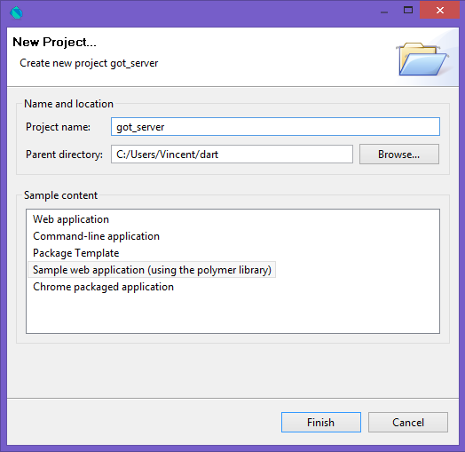
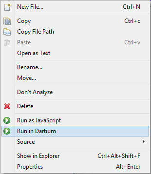

EclipseCon Dart Workshop
In this lab, you will build a web application from scratch : both the server and client sides. Some samples will be given to you, but these are just base data and boilerplate, everything will be built from scratch. Some programming skills are necessary, but you don't need to know anything about Dart first. During all the lab, don't hesitate to ask questions or for help if you are stuck.
Here is what you should get in the end !
Step 0: Set up
In this step, you will install, both Dart Editor, the SDK and everytools needed.
Prerequisite : JDK
Dart Editor requires Java version 6 or higher. Please, fill free to use theses provided on the USB keys if you don't already have it installed.
Use a version compatible with your Operating System (32 or 64 bits). If you still have problems, go to this troubleshoot guide or simply ask for help.
Get Dart
Just copy the folder corresponding to your Operating System somewhere on your hard drive. Please, use a version (32/64 bits) matching the version of your installed JDK.
Start the editor
Go to the dart directory and double-click DartEditor.
Step 1: Your first command-line application
Now that your Dart Editor is up and running, we will test his basic functionalities.
Create a new command-line project
In the top menu, go to File -> New Project...
Name it as you want : got-server will be a good one
Check "Generate sample content"
Choose "Command-line application" from the list
Have a look at the different folders
You should get a project structure similar to the following one :

Side notes
The packages directory will contain all the dependencies we use in the project. We currently have none, we will get to it quite soon. The pubspec.lock file is simply a list of the already downloaded packages. Dart Editor should handle these for you.
The pubspec.yaml file describes our project and its dependencies.
The bin folder will contain our Dart source files. There should only be one for now.
Note:If you have some red X's, I bet it's a connection problem. Please, copy the repository found on the USB keys and directly link to it for each of your dependencies in your
pubspec.yaml file:
dependencies:
my_dependency:
path: /path/to/the/folder/my_dependency
pubspec.yaml
Choose the String that will be printed
Simply choose what will be printed. Don't be affraid and try String interpolation while generating your message.
Execute your application
Right click on your dart file and select Run. You can also use the Ctrl + R shortcut.
Is your message printed on the console?
Step 2: Your first Dart HTTP server
Ok, we have something that runs on our computer, but we are supposed to build a web application. Where is my server?
Code a webserver
Don't worry, it's quite easy. We will use the HttpServer class found in the dart:io package.
1 import 'dart:io';
main() {
2 HttpServer.bind('localhost', 8080).then((HttpServer server) {
3 print('Server started on port ${server.port}');
4 server.listen((HttpRequest request) {
request.response..write('Hello EclipseCon!');
..close();
});
});
}
got_server.dart
1 We must import the dart:io package in order to use the HttpServer class and everything related to inputs/outputs.
2 We bind our webserver to the localhost address (IP 127.0.0.1, or 0.0.0.0) on port 8080.
This bind method returns a Future. As we have seen, we can call the then method on this future with a function that will be executed once the Future completes.
3 We simply print that our server successfully started.
4 We register a method to execute on incoming requests.
Execute and test it
Run your dart file again, it should print that your webserver started.
If it's the case simply head to http://localhost:8080 with your favorite web browser.
It should print your message, isn't it?
Step 3: Serving real content
Fine, we are able to print a String from our webserver and see it in our web browser. We will now serve usefull data instead of a simple message. In our case, a JSON (Javascript Serialization Object Notation).
Source file
Start by copying the file characters.json in the bin folder of your project.
Reading our file
We will simply put the file content in our response for now. We will improve this part much later.
import 'dart:io';
main() {
File jsonFile = new File("characters.json");
String fileContent = jsonFile.readAsStringSync();
...
request.response..write(fileContent);
..close();
...
}
got_server.dart
Note: Here we use the readAsStringSync() method which is a synchronous method to be sure the file has been completely read before starting the webserver. Another way to do would have been to use the readAsString() method which returns a Future and process with the server launch in the handler method.
Rince, repeat...
Simply stop and run your webserver again, you should be used to it as it's the third time.
Check in your web browser that the file content is printed.
Step 4: Our first web page with web components
Create a new wep application

Side notes
Use the menu : File -> New Project...
This time, choose "Web application (using Polymer library)" as shown on the image.
Notice that this time, in our pubspec.yaml file, a polymer dependency has been added for us.
The project now have a web folder that contains html, css and dart files. This one will be exposed when running.
A build.dart file is present at the root of the project and is related to the Dart Editor. It describes how to build our project. It isn't part of this workshop scope.
Get a closer look at the html and dart files
<!DOCTYPE html>
<html>
<head>
<meta charset="utf-8">
<meta name="viewport" content="width=device-width, initial-scale=1.0">
<title>Sample app</title>
<link rel="stylesheet" href="got_client.css">
1 <link rel="import" href="clickcounter.html">
2 <script type="application/dart">export 'package:polymer/init.dart';</script>
3 <script src="packages/browser/dart.js"></script>
</head>
<body>
<h1>Got>client</h1>
<p>Hello world from Dart!</p>
<div id="sample_container_id">
4 <click-counter count="5"></click-counter>
</div>
</body>
</html>
got_client.html
1 This is an Html import. A webcomponent is described in this page (containing his own style etc) and we need to import it if we want to use it.
2 Here, we initialize Polymer Dart. We simply expose (and automatically call) the main method contained in the init.dart file in the polymer package. This will bootstrap Polymer and make it usable. You can Ctrl + clic it if you're curious.
3 This line allows our application to work even if there aren't any Dart VM in our web browser. The code will be compiled in JavaScript if it's the case. Beware, it's slower than generating the application as Javascript first with dart2js.
4 Here, we call the webcomponent called click-counter, initializing it's count attribute to 5.
1 <polymer-element name="click-counter" attributes="count">
2 <template>
3 <style>
div {
font-size: 24pt;
text-align: center;
margin-top: 140px;
}
button {
font-size: 24pt;
margin-bottom: 20px;
}
</style>
<div>
4 <button on-click="{{increment}}">Click me</button><br>
5 <span>(click count: {{count}})</span>
</div>
</template>
6 <script type="application/dart" src="clickcounter.dart"></script>
</polymer-element>
clickcounter.html
1 We define a new Polymer element here. We give it the name click-counter and list his attributes (only count here).
2 Here, we declare a new template.
Note: Beware, you can't use conditionals or loops in the root template element (no if or repeat attribute of the template markup).
3 We can define style which stays intern to the component (the rules defined here will not affect parent html). It can also be done using a
<link rel="stylesheet" type="text/css" href="your_style.css">
4 We bind the increment method of the component to the click listener.
5 We bind the count attribute to the view. If it's value change in the model, the view will automagically be refreshed.
6 We attach a Dart script to this component. We will see what's done inside it.
1 import 'package:polymer/polymer.dart';
2 @CustomTag('click-counter')
3 class ClickCounter extends PolymerElement {
4 @published int count = 0;
5 ClickCounter.created() : super.created() {}
void increment() {
count++;
}
}
clickcounter.dart
1 We will use classes from Polymer library and need to import this package.
2 The @CustomTag annotation allows us to declare a Polymer element and bind it to a component name.
3 We must extend the PolymerElement class to inherit his behaviour.
4 We use the @published annotation to mark the count attribute exposed as a property for our custom element.
5 We have to declare a constructor for our class. Here, we simply call the one from PolymerElement, the parent class.
Test the sample application
There are two options :

Your options
You could run it as JavaScript. In such a case, dart2js will be called and process your pages, producing obfuscated and minified JavaScript code. It's not our best option here because the page would not be automatically refreshed if we make some changes. This option is good only if you want to test the final result as JavaScript (because no current browser contains a Dart Virtual Machine).
You can also run it in Dartium as Dart code. It's faster and you juste need to refresh your pages to see the changes made to your pages or script (juste like when you code in JavaScript).
Note:If you're waiting for the other ones, try to play with the concepts we have seen so far : change the counter initial value, make it incremented by 2 instead of one for each click, add another attribute that you increment on hover...
Step 5: Your own component
Now that we have a web application, we will display our list of Game of Thrones characters from the JSON file returned by our server.
Create a new Web Component
Just create a new polymer-element called "got-characters", with both a characters.html and characters.dart file. Call it from your main page instead of the click-counter one.
Make it simply display "Dart is coming"
In your Dart file, you should annotate your class with the @CustomTag annotation, extend PolymerElement and create a constructor without any parameter calling the parent one. You can find a good example in the click-counter component.
Representing a Game of Thrones character
In the same characters.dart file, create a new class called Character.
Here is a syntax example :
...
class MyClass {
String myAttribute;
Myclass(this.myAttribute);
}
characters.dart
Notice the syntaxic sugar in the constructor : the myAttribute is affected the value of the parameter.
Our Character class will have the same attributes as our JSON file : a name (String), an actor (String), a bio (String), an img (String), a gender (String) and a list of houses (List<String>)
Add a constructor with all these attributes values as parameters.
Iterating over characters
Add an observable characters attribute in your dart file. Name it characters. It will contain a list of characters. Initialize it with at least two characters you create. Fill the list in your constructor.
@CustomTag('got-characters')
class Characters extends PolymerElement {
@observable List characters = [];
Characters.created() : super.created() {
// Your list initialization here
// you can use List.add method
}
}
characters.dart
First of all, replace your css (style) block by the following inclusion. I prepared some basic styles for you just HERE. Copy it in the folder you are working on.
Beware, the script markup must be INSIDE the template one. Everything outside the template markup in a webcomponent will simply be discarded. You cannot use if or repeat on the parent template markup in your web component.
<link rel="stylesheet" href="characters.css">
characters.html
We will then iterate over them in our template.
We will display every character in a HTML list. In order to do that, we will place a <ul> in our HTML file and use a template repeat to display every character in a new <li> element :
...
<ul>
<template repeat="{{REPEAT ON CHARACTERS}}">
<li>
<img src="images/{{LINK TO THE IMAGE ATTRIBUTE}}">
<h2>{{LINK TO THE NAME}}</h2>
</li>
</template>
</ul>
...
characters.html
JSON manipulation
Add a fromJSON constructor in your Character class. It should take a map as parameter and initialize every attribute.
Get the real JSON from server: in our constructor, we will replace the characters list initialization with a call to the getString(url) method from the HttpRequest class.
This method returns a Future. As we have already seen, we will use the then method to proceed our results once the getString call completes.
To process our JSON, we will import the convertion libraries from Dart. They are located in the dart:convert package.
We will convert our JSON String in exploitable data using the JSON.decode(string) method.
This method produces an Iterable. We want to convert each of our JSON element to a new Character. We can simply use the map method to do that.
Unfortunately, the map method returns an iterable in this case, and we would like to have a list. Just use toList().
import 'dart:convert';
...
HttpRequest.getString("http://localhost:8080").then((json) {
this.characters = JSON.decode(json).map((ch) => new Character.fromJSON(ch)).toList();
});
characters.dart
Check that everything works and that the list of characters is correctly displayed.
The detail
We want to display additional informations when we click on a given character of our list.
In order to do that, we will register a listener on the click event on our li elements. The data-id attribute will be used to carry on specific informations (the id of the character). We will use a selected attribute which will contain the current selected character and associate the "active" class if our item is the currently selected one.
...
<li on-click="{{characterSelect}}" data-id="{{character.id}}" class="{{ {'active': selected != null && selected.id == character.id} }}">
...
characters.html
In our Dart file, we will need to define our characterSelect method. As any method call when en event occurs, it must have the following signature:
void yourMethod(Event e, var detail, Element target)
We can get the content of a data attribute (data-id in our case) with the following syntax :
int dataId = int.parse(target.dataset["id"]);
You can now use a selected attribute to memorize the selected character (recovering it from the list with its id, you can use the singleWhere method on lists).
Only affect the new selected character if no one was previously selected or if the selected one differs from the current one.
In your component web page, you can now display the detail when a character is selected.
Inside our ul element :
<template ONLY DISPLAYED WHEN NEEDED">
<div id="detail" class="{{hack}}" style="{{ {'top': selected.id|row} }}">
<dl>
<dt>Gender:</dt>
<dd>{{GET THE GOOD ONE}}</dd>
<dt>Actor name:</dt>
<dd>{{GET THE GOOD ONE}}</dd>
<dt>Biography:</dt>
<dd>{{GET THE GOOD ONE}}</dd>
</dl>
<template repeat="{{MANY HOUSES}}">
<span class="{{TO REPLACE}}" title="{{TO REPLACE}}"></span>
</template>
</div>
</template>
Hacks :
- We use a
hack attribute in our dart file to switch from class ".detail1" to ".detail2" each time a new character is selected. This will trigger an animation on the detail part. Add the corresponding code in your dart file (both in the characterSelect method and as an attribute).
- The style part seems odd. It's because we will use hacky absolute positionning for the detail block. We want it to take 100% width just below the selected character.
- Notice the pipe in this code, it will call the method on the right with the part on the left as a parameter. I give you the content of this method because it is weird : we calculate the position of the detail block given the fact that each line is 283px height and calculating the row in which the selected character is.
...
String row(int charId) {
return (((characters.indexOf(characters.firstWhere((e) => e.id == charId)) / 4).floor() + 1) * 283).toString() + 'px';
}
...
Step 6: If you think this has a happy ending, you haven't been paying attention
It's up to you now. Add some filters to the top of the page.
Here is the list of used houses:
["all", "arryn", "baratheon", "brotherhood", "council", "freefolk", "greyjoy", "lannister", "nightswatch", "stark", "targaryen", "tully", "tyrell", "other"];
You can filter the characters client-side (easiest solution), or server-side, make your choice.
Add some ordering too : alphabetically, in reverse order, random.
Step 7: You know nothing
Misc. additions : Angular, content markup with filters (select)...
Existing libraries in pub, existing html components in pub or threw JS.